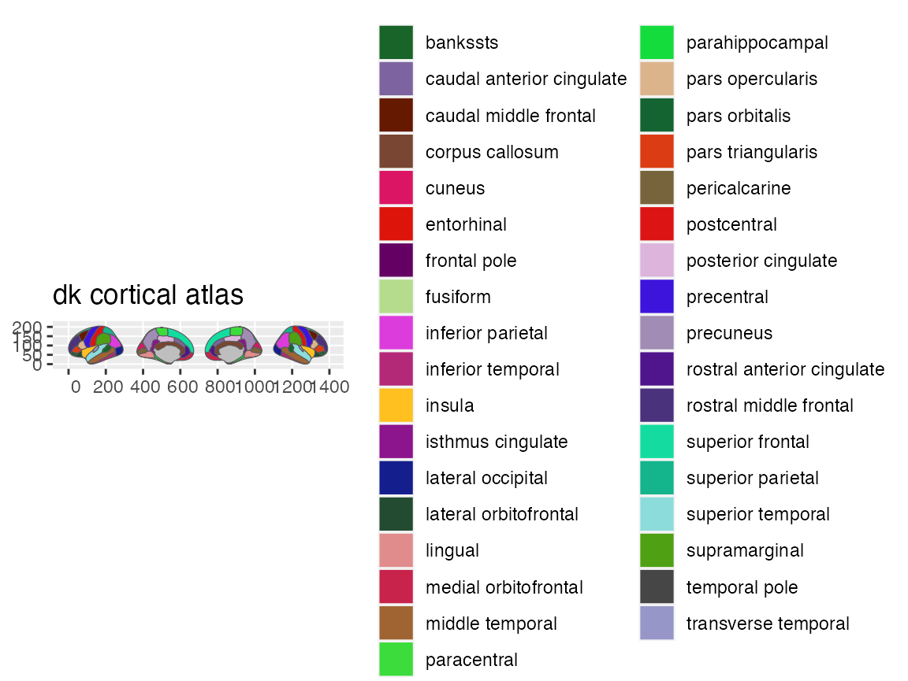
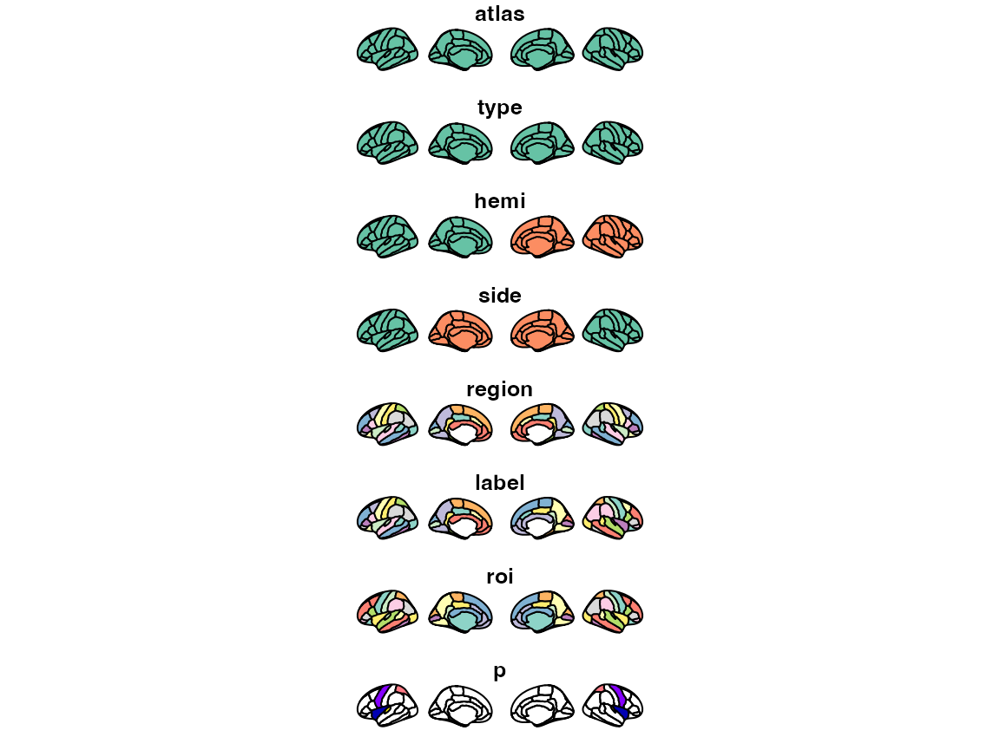
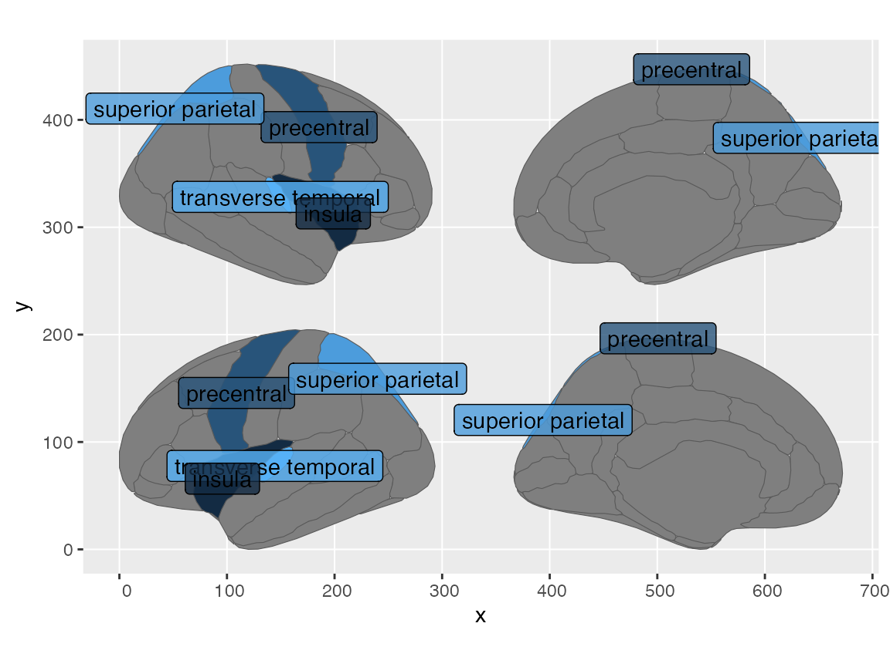
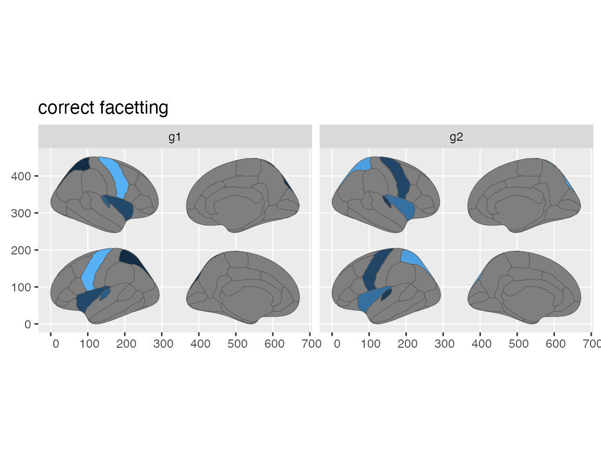

While the new workflow in ggseg using the simple features
type geom_brain works well, it struggles with integration
with other very useful simple feature geoms, like labels. Since
geom_brain can alter the position of slices through the
position argument, and since the atlas is provided as a
separate argument rather than integrated in the data itself, the geoms
for sf-labels are not possible to implement. We also found it too
tricky, with too many re-iterations of the same arguments, to implement
a specialized brain-label geom.
Because of these issues, we here provide an alternate workflow for
those users wanting to implement other simple-feature geoms to the
ggseg-plots. This workflow means not using the geom_brain
function, but pre-joining and fixing the data before providing
it to ggplot. In many ways, this workflow mimics what
happens behind the scenes in ggseg() and within the
geom_brain functions.
Explore the atlas
Firstly, you need to make sure that the atlas you are working on had
simple features (sf) geometry column in it. The easiest way to do this
is to simply call the atlas in the R terminal and look for information
on use in the console printout. The dk-atlas has
use: ggplot() + geom_brain() letting us know that it is set
up to work with simple features.
library(ggseg)
library(ggplot2)
dk
#> # dk cortical brain atlas
#> regions: 35
#> hemispheres: left, right
#> side views: lateral, medial
#> palette: yes
#> use: ggplot() + geom_brain()
#> ----
#> hemi side region label roi
#> <chr> <chr> <chr> <chr> <chr>
#> 1 left lateral bankssts lh_bankssts 0002
#> 2 left lateral caudal middle frontal lh_caudalmiddlefrontal 0004
#> 3 left lateral fusiform lh_fusiform 0008
#> 4 left lateral inferior parietal lh_inferiorparietal 0009
#> 5 left lateral inferior temporal lh_inferiortemporal 0010
#> 6 left lateral lateral occipital lh_lateraloccipital 0012
#> 7 left lateral lateral orbitofrontal lh_lateralorbitofrontal 0013
#> 8 left lateral middle temporal lh_middletemporal 0016
#> 9 left lateral pars opercularis lh_parsopercularis 0019
#> 10 left lateral pars orbitalis lh_parsorbitalis 0020
#> # ℹ 76 more rowsYou can have a look at the atlas and make sure it is what you expect
plot(dk)
If you take an even closer look, you will see that the brain-atlas
class is actually a list of four, where the data contains a
simple features geometry column.
dk$atlas
#> [1] "dk"
dk$type
#> [1] "cortical"
dk$palette
#> bankssts caudal anterior cingulate
#> "#196428" "#7D64A0"
#> caudal middle frontal corpus callosum
#> "#641900" "#784632"
#> cuneus entorhinal
#> "#DC1464" "#DC140A"
#> fusiform inferior parietal
#> "#B4DC8C" "#DC3CDC"
#> inferior temporal isthmus cingulate
#> "#B42878" "#8C148C"
#> lateral occipital lateral orbitofrontal
#> "#141E8C" "#234B32"
#> lingual medial orbitofrontal
#> "#E18C8C" "#C8234B"
#> middle temporal parahippocampal
#> "#A06432" "#14DC3C"
#> paracentral pars opercularis
#> "#3CDC3C" "#DCB48C"
#> pars orbitalis pars triangularis
#> "#146432" "#DC3C14"
#> pericalcarine postcentral
#> "#78643C" "#DC1414"
#> posterior cingulate precentral
#> "#DCB4DC" "#3C14DC"
#> precuneus rostral anterior cingulate
#> "#A08CB4" "#50148C"
#> rostral middle frontal superior frontal
#> "#4B327D" "#14DCA0"
#> superior parietal superior temporal
#> "#14B48C" "#8CDCDC"
#> supramarginal frontal pole
#> "#50A014" "#640064"
#> temporal pole transverse temporal
#> "#464646" "#9696C8"
#> insula
#> "#FFC020"
dk$data
#> Simple feature collection with 90 features and 5 fields
#> Geometry type: MULTIPOLYGON
#> Dimension: XY
#> Bounding box: xmin: 0 ymin: 0 xmax: 1390.585 ymax: 205.4407
#> CRS: NA
#> # A tibble: 90 × 6
#> hemi side region label roi geometry
#> * <chr> <chr> <chr> <chr> <chr> <MULTIPOLYGON>
#> 1 left lateral NA NA 0001 (((84.32563 34.46407, 84…
#> 2 left lateral bankssts lh_banks… 0002 (((214.8215 108.8139, 21…
#> 3 left lateral caudal middle frontal lh_cauda… 0004 (((106.16 184.3144, 93.6…
#> 4 left lateral fusiform lh_fusif… 0008 (((256.5481 48.35713, 24…
#> 5 left lateral inferior parietal lh_infer… 0009 (((218.4373 161.6233, 21…
#> 6 left lateral inferior temporal lh_infer… 0010 (((250.7745 70.75764, 24…
#> 7 left lateral lateral occipital lh_later… 0012 (((277.4615 115.0523, 27…
#> 8 left lateral lateral orbitofrontal lh_later… 0013 (((66.26648 69.56474, 56…
#> 9 left lateral middle temporal lh_middl… 0016 (((238.0128 91.25816, 23…
#> 10 left lateral pars opercularis lh_parso… 0019 (((79.03391 126.496, 74.…
#> # ℹ 80 more rowsIf the atlas is not a simple-features version
We can force the dk brain-atlas into the original ggseg-atlas class and see how it looks different when the type is not set up with simple-features.
dk2 <- as_ggseg_atlas(dk)
dk2
#> # ggseg atlas
#> atlas type hemi side region label roi ggseg
#> <chr> <chr> <chr> <chr> <chr> <chr> <chr> <brn_plyg>
#> 1 dk cortical left lateral NA NA 0001 < p: 1 - v: 12>
#> 2 dk cortical left lateral bankssts lh_b… 0002 < p: 1 - v: 23>
#> 3 dk cortical left lateral caudal middle fron… lh_c… 0004 < p: 1 - v: 29>
#> 4 dk cortical left lateral fusiform lh_f… 0008 < p: 1 - v: 19>
#> 5 dk cortical left lateral inferior parietal lh_i… 0009 < p: 1 - v: 31>
#> 6 dk cortical left lateral inferior temporal lh_i… 0010 < p: 1 - v: 34>
#> 7 dk cortical left lateral lateral occipital lh_l… 0012 < p: 1 - v: 31>
#> 8 dk cortical left lateral lateral orbitofron… lh_l… 0013 < p: 1 - v: 25>
#> 9 dk cortical left lateral middle temporal lh_m… 0016 < p: 1 - v: 46>
#> 10 dk cortical left lateral pars opercularis lh_p… 0019 < p: 1 - v: 23>
#> # ℹ 80 more rowsIf the ggseg-atlas is set up correctly, we should be able to convert it into a simple-features atlas.
dk2 <- as_brain_atlas(dk2)
dk2
#> # dk cortical brain atlas
#> regions: 35
#> hemispheres: left, right
#> side views: lateral, medial
#> palette: no
#> use: ggplot() + geom_brain()
#> ----
#> hemi side region label roi
#> <chr> <chr> <chr> <chr> <chr>
#> 1 left lateral bankssts lh_bankssts 0002
#> 2 left lateral caudal middle frontal lh_caudalmiddlefrontal 0004
#> 3 left lateral fusiform lh_fusiform 0008
#> 4 left lateral inferior parietal lh_inferiorparietal 0009
#> 5 left lateral inferior temporal lh_inferiortemporal 0010
#> 6 left lateral lateral occipital lh_lateraloccipital 0012
#> 7 left lateral lateral orbitofrontal lh_lateralorbitofrontal 0013
#> 8 left lateral middle temporal lh_middletemporal 0016
#> 9 left lateral pars opercularis lh_parsopercularis 0019
#> 10 left lateral pars orbitalis lh_parsorbitalis 0020
#> # ℹ 76 more rowsJoining the atlas with data
In most cases, users want to plot their own data projected onto the
brain. In this workflow, you will need to get all the data, including
having joined the atlas data, before calling
ggplot. This will then become the same workflow as any
other simple-featured plotting, and many new possibilities of
specialized sf-geoms opens to you.
First, let’s make up some data that we want to plot. Here a data.frame of 4 brain regions, with p-values connected to them.
library(dplyr)
#>
#> Attaching package: 'dplyr'
#> The following objects are masked from 'package:stats':
#>
#> filter, lag
#> The following objects are masked from 'package:base':
#>
#> intersect, setdiff, setequal, union
some_data <- tibble(
region = c(
"transverse temporal",
"insula",
"precentral",
"superior parietal"
),
p = sample(seq(0, .5, .001), 4)
)
some_data
#> # A tibble: 4 × 2
#> region p
#> <chr> <dbl>
#> 1 transverse temporal 0.172
#> 2 insula 0.406
#> 3 precentral 0.459
#> 4 superior parietal 0.062To join a data.frame to an atlas object, you should use the
specialized brain_join function. This makes sure that atlas
information is preserved while joining.
some_data |>
brain_join(dk)
#> merging atlas and data by 'region'
#> Simple feature collection with 90 features and 8 fields
#> Geometry type: MULTIPOLYGON
#> Dimension: XY
#> Bounding box: xmin: 0 ymin: 0 xmax: 1390.585 ymax: 205.4407
#> CRS: NA
#> First 10 features:
#> atlas type hemi side region label
#> 1 dk cortical left lateral <NA> <NA>
#> 2 dk cortical left lateral bankssts lh_bankssts
#> 3 dk cortical left lateral caudal middle frontal lh_caudalmiddlefrontal
#> 4 dk cortical left lateral fusiform lh_fusiform
#> 5 dk cortical left lateral inferior parietal lh_inferiorparietal
#> 6 dk cortical left lateral inferior temporal lh_inferiortemporal
#> 7 dk cortical left lateral lateral occipital lh_lateraloccipital
#> 8 dk cortical left lateral lateral orbitofrontal lh_lateralorbitofrontal
#> 9 dk cortical left lateral middle temporal lh_middletemporal
#> 10 dk cortical left lateral pars opercularis lh_parsopercularis
#> roi p geometry
#> 1 0001 NA MULTIPOLYGON (((84.32563 34...
#> 2 0002 NA MULTIPOLYGON (((214.8215 10...
#> 3 0004 NA MULTIPOLYGON (((106.16 184....
#> 4 0008 NA MULTIPOLYGON (((256.5481 48...
#> 5 0009 NA MULTIPOLYGON (((218.4373 16...
#> 6 0010 NA MULTIPOLYGON (((250.7745 70...
#> 7 0012 NA MULTIPOLYGON (((277.4615 11...
#> 8 0013 NA MULTIPOLYGON (((66.26648 69...
#> 9 0016 NA MULTIPOLYGON (((238.0128 91...
#> 10 0019 NA MULTIPOLYGON (((79.03391 12...The output is a standard sf-object, and can therefore also be plotted as one.
some_data |>
brain_join(dk) |>
plot()
#> merging atlas and data by 'region'
To use ggplot for plotting the new sf-object, use standard
ggplot-syntax with the geom_sf geom.
some_data |>
brain_join(dk) |>
ggplot() +
geom_sf(aes(fill = p))
#> merging atlas and data by 'region'
If you want to reposition the slices, so that they are more to you
liking, use the reposition_brain function (not to be
confused with the ggproto-function position_brain!)
some_data |>
brain_join(dk) |>
reposition_brain(hemi ~ side) |>
ggplot() +
geom_sf(aes(fill = p))
#> merging atlas and data by 'region'
Once your data is plotted as a geom_sf, you can add geoms like
geom_sf_label to add labels to the regions.
some_data |>
brain_join(dk) |>
reposition_brain(hemi ~ side) |>
ggplot(aes(fill = p)) +
geom_sf(show.legend = FALSE) +
geom_sf_label(
aes(label = ifelse(!is.na(p), region, NA)),
alpha = .8,
show.legend = FALSE
)
#> merging atlas and data by 'region'
#> Warning: Removed 78 rows containing missing values or values outside the scale range
#> (`geom_label()`).
If you want a version where the labels do not overlap each other, you
can try the geom_sf_label_repel function from the
ggrepel package.
Faceting groups
If your data includes groups, and you want to facet the output, you
need to group the data before calling
brain_join.
some_data <- tibble(
region = rep(
c("transverse temporal", "insula", "precentral", "superior parietal"),
2
),
p = sample(seq(0, .5, .001), 8),
groups = c(rep("g1", 4), rep("g2", 4))
)
some_data
#> # A tibble: 8 × 3
#> region p groups
#> <chr> <dbl> <chr>
#> 1 transverse temporal 0.484 g1
#> 2 insula 0.357 g1
#> 3 precentral 0.366 g1
#> 4 superior parietal 0.046 g1
#> 5 transverse temporal 0.414 g2
#> 6 insula 0.451 g2
#> 7 precentral 0.485 g2
#> 8 superior parietal 0.2 g2
some_data |>
group_by(groups) |>
brain_join(dk) |>
reposition_brain(hemi ~ side) |>
ggplot(aes(fill = p)) +
geom_sf(show.legend = FALSE) +
facet_wrap(~groups) +
ggtitle("correct facetting")
#> merging atlas and data by 'region'